Introduction to version control with Git - Why we want to track versions and how to go back in time to a working version
We rewrote this lesson in February and March 2024
If you are looking for the previous version, you can browse the 2023 version of this lesson.
This is the introductory lesson to version control using Git.
We start with an existing repository on the web to visually explain the basic concepts of version control. We later move to a local repository. Our goal there is not only to be able to apply changes to an existing repository but to also be able to turn own projects into Git repositories and to share them with others.
In the separate collaborative Git lesson, we focus more on the collaboration and the use of remote repositories. We try to stick to simple workflows, just enough for researchers who are not obsessed with Git to be able to work well.
The goals of the module as a whole are that the learner will feel comfortable about committing changes, branching, and merging.
Prerequisites
We offer several options to go through the material: on the web, in an editor, or in the terminal. Please see the installation instructions. If you wish to follow in the terminal and are new to the command line, we recorded a short shell crash course.
We recommend to have a GitHub account. Why GitHub? Also GitLab and Bitbucket would allow similar workflows and basically everything that we will discuss is transferable. With this material and these exercises we do not implicitly endorse the company GitHub. We have chosen to demonstrate a number of concepts using examples with GitHub because it is currently the most popular web platform for hosting Git repositories and the chance is high that you will interact with GitHub-based repositories even if you choose to host your Git repository on another service.
Motivation [1]
Objectives
Make sure nobody leaves the workshop without starting to use some form of version control.
Discuss the reasons why we advocate distributed version control.
Instructor note
15 min discussion/demonstration
Git is all about keeping track of changes
We will learn how to keep track of changes first in the web browser. Below are screenshots of tracked changes with Git (from this example repository):
{kind=link}
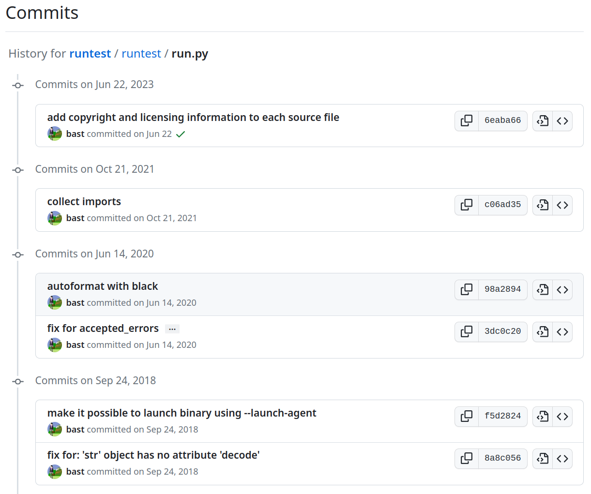
Web browser, GitHub view
Later also using the terminal or the editor (the same example repository):
{kind=link}
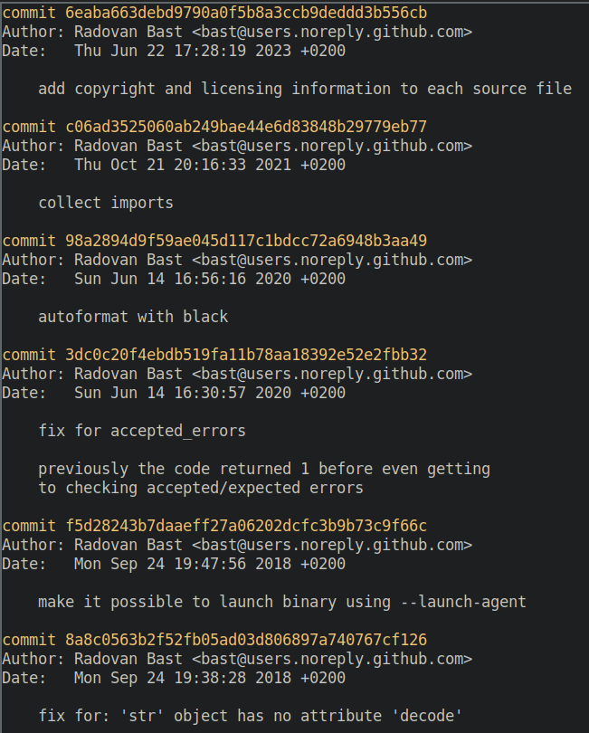
The same as above, but the terminal view
Why do we need to keep track of versions?
Problem: If you have to identify and find your code from 17 days ago, can you?
Version control is an answer to the following questions (do you recognize some of them?):
“It broke … hopefully I have a working version somewhere?”
“Can you please send me the latest version?”
“Where is the latest version?”
“Which version are you using?”
“Which version have the authors used in the paper I am trying to reproduce?”
“Found a bug! Since when was it there?”
“I am sure it used to work. When did it change?”
“My laptop is gone. Is my thesis now gone?”
Features: roll-back, branching, merging, collaboration
Problem: Your code worked two days ago, but is giving an error now. You don’t know what you changed.
Problem: You and your colleague want to work on the same code at the same time.
Roll-back: you can always go back to a previous version and compare
Branching and merging:
Work on different ideas at the same time
Different people can work on the same code/project without interfering
You can experiment with an idea and discard it if it turns out to be a bad idea

Image created using https://gopherize.me/ (inspiration).
Collaboration: review, compare, share, discuss
Reproducibility
Problem: Someone asks you about your results from 5 years ago. Can you get the same results now?
How do you indicate which version of your code you have used in your paper?
When you find a bug, how do you know when precisely this bug was introduced (Are published results affected? Do you need to inform collaborators or users of your code?).
With version control we can “annotate” code (browse this example online):

Example of a git-annotated code with code and history side-by-side.
Talking about code
Problem: You want to show someone a few lines from one of your projects.
Which of these two is more practical?
“Clone the code, go to the file ‘src/util.rs’, and search for ‘time_iso8601’”. Oh! But make sure you use the version from August 2023.”
Or I can send you a permalink:

Permalink that points to a code portion.
What we typically like to snapshot
Software (this is how it started but Git/GitHub can track a lot more)
Scripts
Documents (plain text files much better suitable than Word documents)
Manuscripts (Git is great for collaborating/sharing LaTeX or Quarto manuscripts)
Configuration files
Website sources
Data
Motivation [2]
Difficulties of version control
Despite the benefits, let’s be honest, there are some difficulties:
One more thing to learn (it’s probably worth it and will save you more time in the long run; basic career skill).
Difficult if your collaborators don’t want to use it (in the worst case, you can version control on your side and email them versions).
Advanced things can be difficult, but basics are often enough (ask others for help when needed).
Why Git and not another tool?
Easy to set up: no server needed.
Very popular: chances are high you will need to contribute to somebody else’s code which is tracked with Git.
Distributed: good backup, no single point of failure, you can track and clean-up changes offline, simplifies collaboration model for open-source projects.
Important platforms such as GitHub, GitLab, and Bitbucket build on top of Git.
However, any version control is better than no version control and it is OK to prefer a different tool than Git such as Subversion, Mercurial, Pijul, or others.
Configuring Git command line and editor
We have a longer version of this in the installation instructions. But for clarity, we will review the most important parts here.
You don’t need to set these if you work only through the GitHub web interface. If you use VS Code or other editors or integrated development environments, the editor might prompt you to set these up. If you use RStudio, you can carry out the configuration in RStudio (see the RStudio tab in the section Authenticating to GitHub below).
These configuration settings are saved in a file called .gitconfig in your
home directory. If this file exists, editors like VS Code will use this
configuration.
If you want to see your configuration settings, you can use the
command (--show-origin means it shows the file where each setting
is defined):
$ git config --list --show-origin
Name and email address for Git commit metadata
Git commits carry metadata about the author and two things you will always need to define somewhere are:
$ git config --global user.name "Your Name"
$ git config --global user.email yourname@example.com
For the email address we recommend to use the one you use for your GitHub account.
If you prefer to not use it, you can instead use
YOUR_GITHUB_USERNAME@users.noreply.github.com as the email address (replace YOUR_GITHUB_USERNAME).
This means that nobody can write to this email address, but GitHub will still
be able to connect your contributions with your GitHub account.
Note that these can, in theory, be anything: this is just data, not a registration or identity requirement.
Default branch name
The default branch name in Git has been master for a long time, but it is
changing to main in many places. We recommend to set it to main for new
repositories that you create locally:
$ git config --global init.defaultbranch main
Useful alias for the command line
We recommend to define an alias (shortcut) in Git, to be able to nicely visualize branch structure in the terminal without having to remember a long Git command:
$ git config --global alias.graph "log --all --graph --decorate --oneline"
We have an own section about aliases: aliases.
Default text editor for commit messages
Git sometimes needs to start a text editor for you to enter messages (unless you create
commits from inside an editor or on the web).
This may have already been set to something (like VS Code), but if not
nano is usually a safe choice:
$ git config --global core.editor nano
The installation instructions text editor page gives ways to set other editors, or do a web search for “git set editor to [editor name]”.
Authenticating to GitHub: SSH or HTTPS or VS Code or RStudio?
How does GitHub know who you are? We discuss here four options:
SSH is the classic method, using Secure Shell Protocol remote connection keys.
HTTPS works with the Git Credential Manager, which is an extra add-on that works easily in Windows and Mac.
VS Code editor can authenticate with GitHub using its own authentication method.
RStudio can handle authentication via HTTPS or SSH. Here, the RStudio instructions cover using HTTPS.
Read how to install them from the installation instructions.
Test which one you should use:
Try this command:
$ ssh -T git@github.com
If it returns Hi USERNAME! You've successfully authenticated, ...,
then SSH is configured and the following steps will work with the SSH
cloning.
See our installation instructions to set up SSH access.
From now on, if you know that SSH works, you should always select
SSH as the clone URL from GitHub, or translate the URL to start with
the right thing yourself: git@github.com: (with the :).
Try this command:
$ git config --get credential.helper
If this shows something, then the credential manager is probably configured and HTTPS cloning will work (but you can’t verify it until you try using it).
From now on, if you know that HTTPS works, you should always select
HTTPS as the clone URL from GitHub, or translate the URL to start with
the right thing yourself: https://github.com/
VS Code has its own authentication method and the editor will guide you through the process. If you are using VS Code, you can skip the SSH and HTTPS checks.
From now on, you should select HTTPS as the clone URL from
GitHub, or translate the URL to start with the right thing
yourself: https://github.com/
If you don’t want VS Code to be connected to your GitHub account, set up and use the SSH method instead.
See our installation instructions
for how to run the GitHub configuration directly in RStudio using commands
in the R package usethis and how to test that everything worked. These
instructions use HTTPS for authentication.
After the configuration, you should select HTTPS as the clone URL from
GitHub, or translate the URL to start with the right thing
yourself: https://github.com/
To set your default branch name in Git to main in RStudio, run
usethis::git_default_branch_configure()
Any configuration steps above that are not covered in the RStudio instructions can be run in the Terminal tab of RStudio’s console panel.
Copy and browse an existing project [1]
In this episode, we will look at an existing repository to understand how all the pieces work together. Along the way, we will make a copy (a fork) of the repository for us, which will be used for our own changes in the next episode.
We used to start by directly going and creating a repository from scratch. This was abstract and hard to understand.
Instead, we’ll show you all the cool stuff in a Git repository first, and then start adding files.
We use an example recipe book we created just for this course.
By the end of the course, you’ll know how to contribute your own recipes to it.
Objectives
See a real Git repository and understand what is inside of it.
Understand how version control allows advanced inspection of a repository.
See how Git allows multiple people to collaborate relatively easily.
See the big picture instead of remembering a bunch of commands.
GitHub, VS Code, Command line, and more
We offer four different paths for this exercise:
GitHub (this is the one we will demonstrate on day 1)
VS Code (if you prefer to follow along using an editor; we will return to this on day 2)
RStudio (if you prefer to follow along using an editor; we will return to this on day 2)
Command line (for people comfortable with the command line; you will see more of this on day 2)
In the future we’ll add more paths, for example Jupyter (contributions welcome!).
Creating a copy of the repository by “forking”
A repository is a collection of files in one directory tracked by git. A GitHub repository is GitHub’s copy, which adds things like access control. Each GitHub repository is owned by a user or organization, who controls access.

Illustration of forking a repository on GitHub.
First, we need to make our own copy of the exercise repository. This will become important later, when we make our own changes.
Go to the repository view on GitHub:
https://github.com/cr-workshop-exercises/recipe-book: you can use this one if you don’t want your fork and contributions to be visible on the stream or the recording
https://github.com/cr-workshop-exercises/recipe-book-recorded: we will use this one for the demonstration which is streamed and recorded
First, on GitHub, click the button that says “Fork”. It is towards the top-right of the screen:

You should shortly be redirected to your copy of the repository USER/recipe-book.
At all times you should be aware of if you are looking at your repository or the CodeRefinery upstream repository.
Your repository: https://github.com/USER/recipe-book
CodeRefinery upstream repository: https://github.com/cr-workshop-exercises/recipe-book
You only need to open your own view, as described above. The browser
URL should look like https://github.com/USER/recipe-book, where
USER is your GitHub username.
You need to have forked the repository as described above.
We need to start by making a copy of this repository locally.
Start VS Code.
If you don’t have the default view (you already have a project open), go to File → New Window.
Under “Start” on the screen, select “Clone Git Repository…”. Alternatively navigate to the “Source Control” tab on the left sidebar and click on the “Clone Repository” button.
Paste in this URL:
https://github.com/USER/recipe-book, whereUSERis your username. You can copy this from the browser.Browse and select the folder in which you want to clone the repository.
Say yes, you want to open this repository.
Select “Yes, I trust the authors” (the other option works too).
This path is advanced and we do not include all command line information: you need to be somewhat comfortable with the command line already.
We need to start by making a copy of this repository locally. You need to have forked the repository as described above.
Start the terminal in which you use Git (terminal application, or Git Bash).
Change to the directory where you would want the repository to be (
cd ~/codefor example, if the~/codedirectory is where you store your files).Run the following command:
git clone https://github.com/USER/recipe-book, whereUSERis your username. You might need to use a SSH clone command instead of HTTPS, depending on your setup.Change to that directory:
cd recipe-book
You need to have forked the repository as described above.
We need to start by making a copy of this repository locally.
Start RStudio.
Go to “File” → “New Project…”
Choose “Version Control”, and then “Git”
In the “Repository URL” field, paste in this URL:
https://github.com/USER/recipe-book, whereUSERis your username. You can copy this from the browser.You can change the “Project directory name” if you want but that is not mandatory. By default, it will use the repository name from the URL.
Click “Create Project”
Copy and browsing an existing project [2]
Exercise
Work on this by yourself or in your team.
Instructor note
Before starting the exercise session show how to fork the repository to own account (above).
Exercise: Browsing an existing project (25 min)
Browse the recipe-book project (introduced above) and explore commits and branches. Take notes and prepare questions. The hints are for the GitHub path in the browser.
Browse the commit history: Are commit messages understandable? (Hint: “Commit history”, the timeline symbol, above the file list)
Compare the commit history with the network graph (“Insights” -> “Network”). Can you find the branches?
How can you find out when a recipe was last modified?
How many changes did the Guacamole recipe receive (you find it under “sides”)? Try to click on some of the commits to see what changed. (Hint: “History” in the view of a single file)
Which recipes include the ingredient “salt”? (Hint: the GitHub search. From the repository view, it should offer the filter “repo:USER/recipe-book” by default. What if you add a search term?)
In the Guacamole recipe, find out who modified each line last and when (click on file, then click “Blame” button). Find out who added the cilantro and in which commit. (Hint: “Blame” view in the file view)
Can you use these recipes yourself? Are you allowed to share modifications? (Hint: look for a license file)
Browse issues and pull requests in the upstream repository (the repository you forked from). Any idea what these might be good for? (Hint: tabs in the repository view)
The solution below goes over most of the answers, and you are encouraged to use it when the hints aren’t enough - this is by design.
Solution and walk-through
(1) Basic browsing
The most basic thing to look at is the history of commits.
This is visible from a button in the repository view. We see every change, when, and who has committed.
Every change has a unique identifier, such as
554c187. This can be used to identify both this change, and the whole project’s version as of that change.Clicking on a change in the view shows more.
Click on the timeline symbol in the repository view:

This can be done from “Timeline”, in the bottom of explorer, but only for a single file.
Run:
$ git log
Try also:
$ git log --oneline
This can be done from “History”, in the top right panel of explorer. This will open a pop-up window from which you can explore the history of commits.
{kind=link}
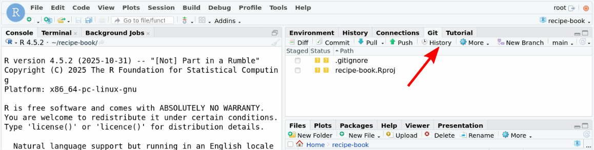
(2) Compare commit history with network graph
The commit history we saw above looks linear: one commit after another. But if we look at the network view, we see some branches and merges. We’ll see how to do these later. This is another one of the basic Git views.
In a new browser tab, open the “Insights” tab, and click on “Network”. You can hover over the commit dots to see the person who committed and how they correspond with the commits in the other view:

We don’t know how to do this without an extension. Try starting a terminal and using the “Command Line” option.
If you defined the git graph alias (shortcut) as in Configuring Git command line and editor, you
can view the network graph with:
$ git graph
If not, you can use the basic command:
$ git log --graph --oneline --decorate --all
This can be viewed in the same “History” tab that we just looked at. The branch network can be seen on the left of the commit list, and individual commits can be clicked to see the person who committed and what changes they did.
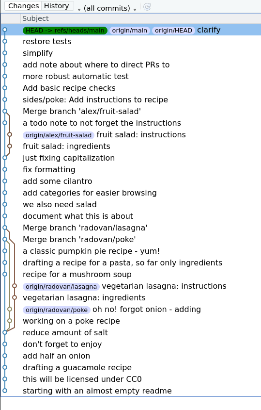
(3) When was a recipe last modified?
We see the history for the whole repository, but we can also see it for a single file.
Navigate to the file view: Main page → sides directory → guacamole.md. Click the “History” button near the top right:
{kind=link}
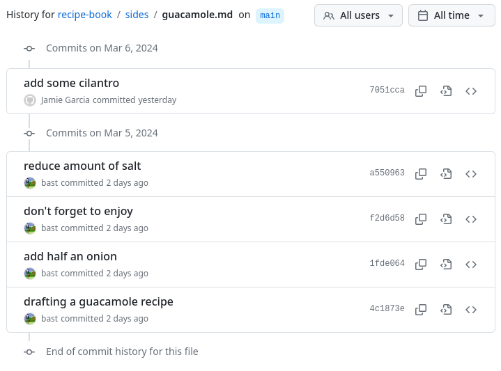
Open sides/guacamole.md file in the editor. Under the file browser, we see a “Timeline” view there.
The git log command can take a filename and provide the log of only
a single file:
$ git log sides/guacamole.md
Open the file in the main editor window, and navigate to the “Version control” menu (Git icon in the toolbar right below the main menu bar), then select “Log of guacamole.md”
{kind=link}
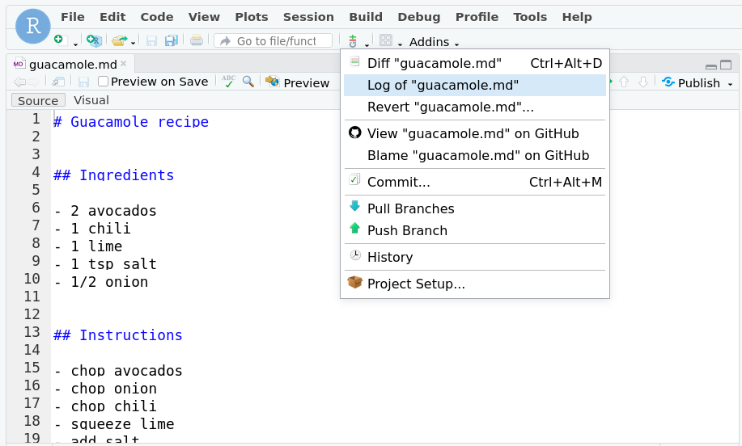
This will open a pop-up window showing all commits that modified the “Guacamole.md” file.
{kind=link}
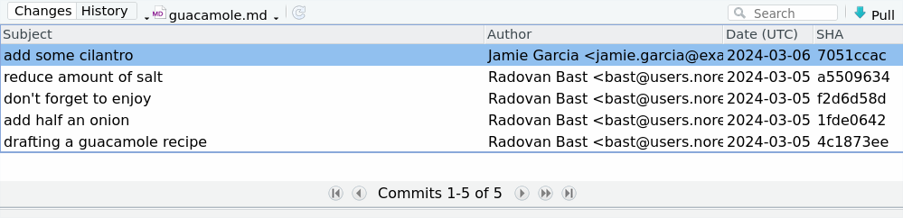
(4) How many changes did the Guacamole recipe receive?
According to the view above, it seems to have five changes (as of 2024-03-07). This could change later on.
(5) Which recipes include the ingredient “salt”
Version control makes it very easy to find all occurrences of a single word. This is useful for things like finding where functions or variables are defined or used.
We go to the main recipe book view. We click the Search magnifying class at the very top, type “salt”, and click enter. We see every instance, including the context.
Searching in a forked repository will not work instantaneously!
It usually takes a few minutes before one can search for keywords in a forked repository since it first needs to build the search index the very first time we search. Start it, continue with other steps, then come back to this.

If you use the “Search” magnifying class on the left sidebar, and search for “salt” it shows the occurrences in every file. You can click to see the usage in context.
grep is the command line tool that searches for lines matching a term
$ git grep salt # only the lines
$ git grep -C 3 salt # three lines of context
$ git grep -i salt # case insensitive
Go to Edit → Find in Files… (ctrl+shift+F) and type salt in the Find field. It will by default search for salt in all files in the recipe-book directory. Press Find button at the bottom of the pop-up window. It will show all occurrences in every file in a Find in Files tab in the Console panel.
{kind=link}
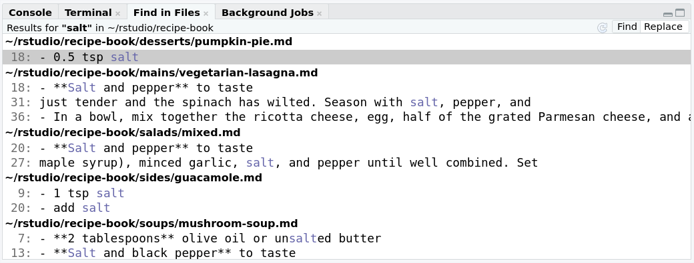
(6) Who modified each line last and when?
This is called the “annotate” or “blame” view. The name “blame” is very unfortunate, but it is the standard term for historical reasons for this functionality and it is not meant to blame anyone.
From a recipe view, change preview to “Blame” towards the top-left. To get the actual commit, click on the commit message.
{kind=link}
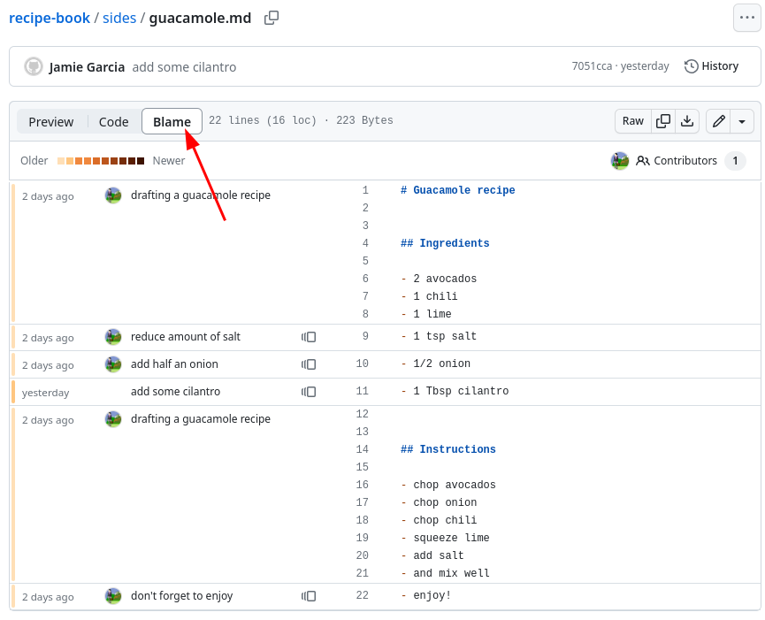
This requires an extension. We recommend for now you use the command line version, after opening a terminal.
These two commands are similar but have slightly different output.
$ git annotate sides/guacamole.md
$ git blame sides/guacamole.md
Open the file in the main editor window, and navigate to the “Version control” menu (Git icon in the toolbar right below the main menu bar), then select “Blame “guacamole.md” on GitHub”. This will open a GitHub page in your web-browser with the same view as shown in the GitHub tab.
{kind=link}
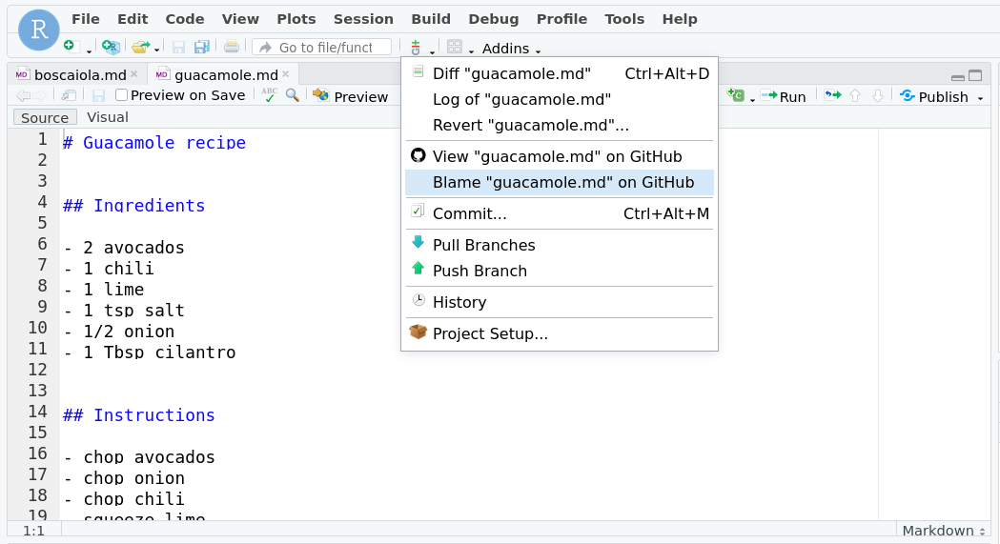
{kind=link}
(8) Browse issues and pull requests in the upstream repository
This can only be done through the GitHub view. Go to the main repository cr-workshop-exercises/recipe-book, (not your fork): https://github.com/cr-workshop-exercises/recipe-book. Issues and Pull requests are different for each GitHub copy.
Click on the “Issues” tab. These are notes that people have added, which allow discussion about the project. Often they are used to communicate problems or ideas.
Click on the “Pull requests” tab. This allows anyone to propose changes, but only the repository owners can accept.
Summary
Git allowed us to understand this simple project much better than we could, if it was just a few files on our own computer.
It was easy to share the project with the course.
By forking the repository, we created our own copy. This is important for the next episode, where we will make changes to our copy.
Recording changes [1]
The first and most basic task to do in Git is record changes using commits. In this part, we will record changes in two ways: on a new branch (which supports multiple lines of work at once), and directly on the “main” branch (which happens to be the default branch here).
Objectives
Record new changes to our own copy of the project.
Understand adding changes in two separate branches.
See how to compare different versions.
Background
In the previous episode we have browsed an existing repository and saw commits and branches.
Each commit is a snapshot of the entire project at a certain point in time and has a unique identifier (hash) .
A branch is a line of development, and the
mainbranch ormasterbranch are often the default branch in Git.A branch in Git is like a sticky note that is attached to a commit. When we add new commits to a branch, the sticky note moves to the new commit.
Tags are a way to mark a specific commit as important, for example a release version. They are also like a sticky note, but they don’t move when new commits are added.
What if two people, at the same time, make two different changes? Git can merge them together easily. Image created using https://gopherize.me/ (inspiration).
Recording changes [2]
Exercise

Illustration of what we want to achieve in this exercise.
We offer four different paths of how to do this exercise. For the CodeRefinery workshop day 1, we use and demonstrate the GitHub path only and recommend you do that (you can get experience with the other paths on day 2).
Exercise: Practice creating commits and branches (20 min)
Make sure that you now work on your fork of the recipe-book repository (
USER/recipe-book, notcr-workshop-exercises/recipe-book)First create a new branch and then add a recipe to the branch and commit the change.
In a new commit, modify the recipe you just added.
Switch to the
mainbranch and modify a recipe there.Browse the network and locate the commits that you just created (“Insights” -> “Network”).
Compare the branch that you created with the
mainbranch. Can you find an easy way to see the differences?Can you find a way to compare versions between two arbitrary commits in the repository?
Try to rename the branch that you created and then browse the network again.
Try to create a tag for one of the commits that you created (on GitHub, create a “release”).
The solution below goes over most of the answers, and you are encouraged to use it when the hints aren’t enough - this is by design.
Solution and walk-through
(1) Make sure you are on your fork
{kind=link}
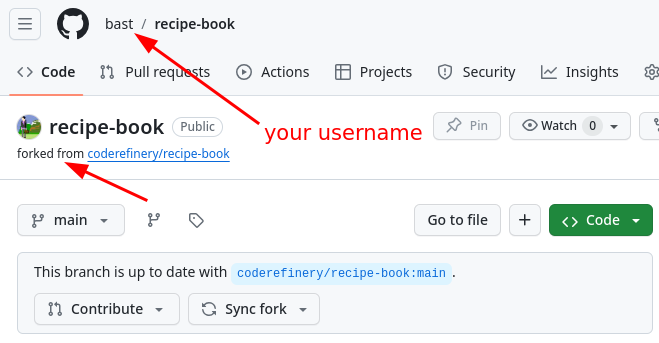
You want to see your username in the URL and you want to see the “forked from …” part.
(2) Create a branch and add a recipe to the branch
A recipe template is below. This format is called “Markdown”, but it doesn’t matter right now. You don’t have to use this particular template.
# Recipe name
## Ingredients
- Ingredient 1
- Ingredient 2
## Instructions
- Step 1
- Step 2
There is a main branch that is default. We want to create a
different branch for our new commit, because we will merge it later.
Commit is the verb to describe recording more changes, and also the
name of the thing you make. A commit is identified by something such as
554c187.
Where it says “main” at the top left, click, enter a new branch name
new-recipe, click on the offer to create the new branch (“Create branch new-recipe from main”).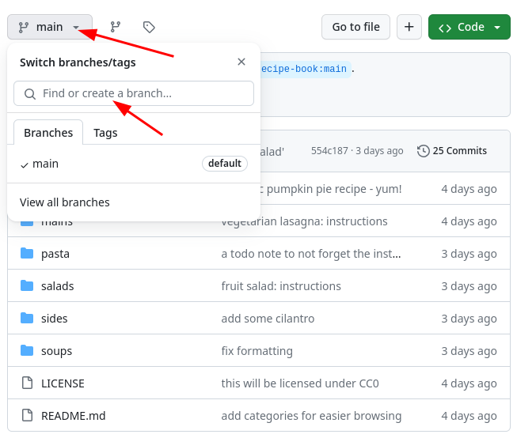
Change to some sub-directory, for example
sides.Make sure you are still on the
new-recipebranch (it should say it at the top), and click “Add file” → “Create new file” from the upper right.Enter a filename where it says “Name your file…”, with a
.mdat the end. Example:mixed-nuts.md.Enter the recipe. You can use the template above.
Click “Commit changes”
Enter a commit message. Then click “Commit changes”.
{kind=link}
You should appear back at the file browser view, and see your new recipe there.
Make sure that you are on the main branch.
Version control button on left sidebar → Three dots in upper right of source control → Branch → Create branch.
VS Code automatically switches to the new branch.

Creating a new branch in VS Code.
Create a new file, for example
sides/mixed-nuts.md.In the version control sidebar, click the
+sign to add the file for the next commit.Enter a brief message and click “Commit”.
{kind=link}
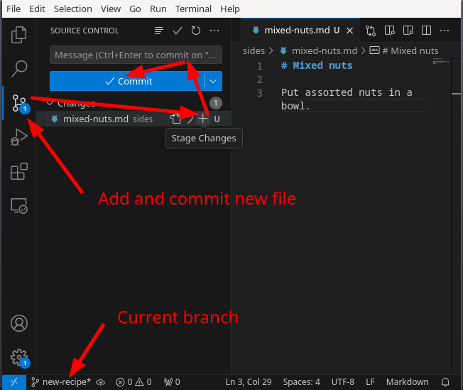
Committing a new file in VS Code.
Create a new branch called new-recipe from main and switch to it:
$ git switch --create new-recipe main
Then create the new file. Finally add and commit the file:
$ git add sides/mixed-nuts.md
$ git commit -m "Add mixed nuts recipe"
In the Git tab of the Environment panel (upper right), click New Branch.
In the pop-up fill in the branch name, e.g. “new-recipe”, untick the box in front of Sync branch with remote to avoid the branch to be pushed to GitHub right away.
Click Create and RStudio will automatically switch to the new branch.
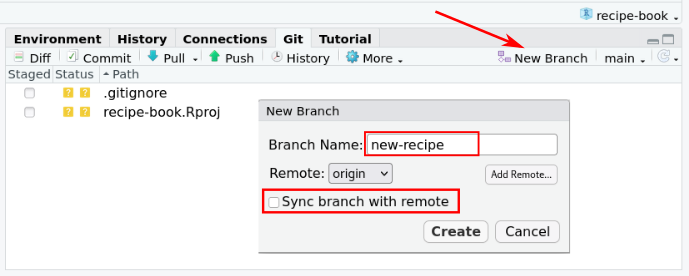
Create a new file, for example
sides/mixed-nuts.md. Remember to save any changes to your file before committing.In the Git tab in the Environment panel (upper right) check the box in front of the file you just created, then click Commit in the tab menu-bar to open the Git Changes window.
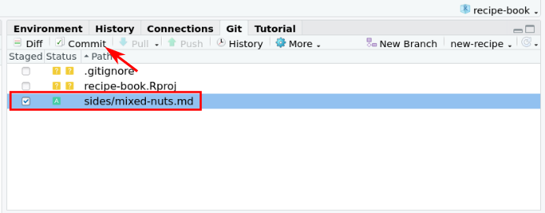
In the Changes window, check that your new file is selected (ticked), write a short commit message, and finally click “Commit”
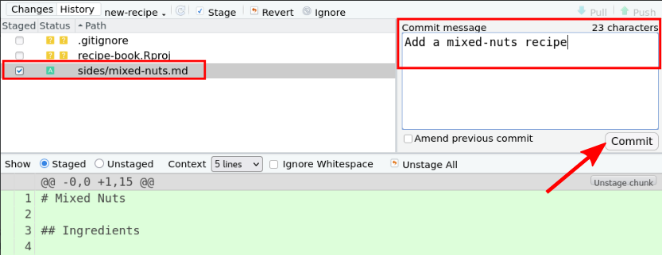
{kind=link}
{kind=link}
{kind=link}
(3) Modify the recipe with a new commit
This is similar to before, but we click on the existing file to modify.
Click on your new recipe, for example
mixed-nuts.md.Click the edit button, the pencil icon at top-right.
Follow the “Commit changes” instructions as in the previous step.
Repeat as in the previous step.
Modify the file. Then commit the new change:
$ git add sides/mixed-nuts.md
$ git commit -m "Short summary of the change"
Make sure to replace “Short summary of the change” with a meaningful commit message.
Make some changes to the recipe you created in the step above. Then follow the same instructions as above starting from step 5.
(4) Switch to the main branch and modify a recipe there
Go back to the main repository page (your user’s page).
In the branch switch view (top left above the file view), switch to
main.Modify another recipe that already exists, following the pattern from above. Don’t modify the one you just created (but it shouldn’t even be visible on the
mainbranch).
Use the branch selector at the bottom to switch back to the main branch. Repeat the same steps as above.

Switching branch via selector at bottom.
First switch to the main branch:
$ git switch main
Then modify a file. Finally git add and then commit the change:
$ git commit -m "Short summary of the change"
In the Git tab of the Environment panel (upper right), click your current branch name, here “new-recipe” and then choose the “main” branch.
{kind=link}
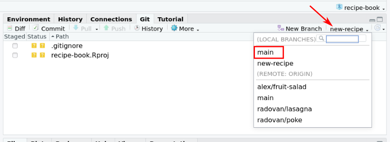
Modify another recipe and commit your changes.
(5) Browse the commits you just made
Let’s look at what we did. Now, the main and new-recipe branches
have diverged: both have some modifications. Try to find the commits
you created.
Insights tab → Network view (just like we have done before).
This requires an extension. Opening the VS Code terminal lets you use the command line method.
{kind=link}
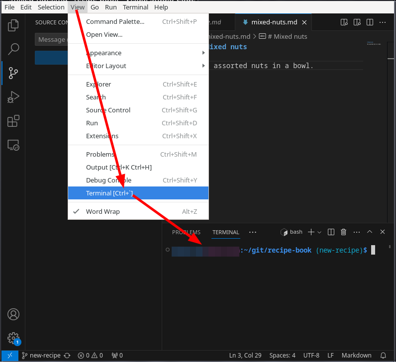
View → Terminal will open a terminal at bottom. This is a normal command line interface and very useful for work. (Note the git-aware prompt that shows the current branch. This requires other setup.)
$ git graph
$ git log --graph --oneline --decorate --all # If you didn't define git graph yet.
In my case I got:
* b4de93b (HEAD -> main) add spring onion to poke
| * dc5d6f0 (origin/new-recipe, new-recipe) adding chocolate to the mixed nuts recipe
| * b4035e3 add mixed nuts recipe
|/
* 554c187 (origin/main, origin/HEAD) Merge branch 'alex/fruit-salad'
|\
| * 89d5ef9 fruit salad: instructions
| * 3bd2468 fruit salad: ingredients
* | 8bcb766 a todo note to not forget the instructions
|/
* b950c5c just fixing capitalization
* d18035e fix formatting
* 7051cca add some cilantro
* ae19e81 add categories for easier browsing
* a6fe629 we also need salad
* 30b89c4 document what this is about
* fd12dc1 Merge branch 'radovan/lasagna'
|\
| * 7753d43 vegetarian lasagna: instructions
| * aa0473e vegetarian lasagna: ingredients
* | 1e5a24a Merge branch 'radovan/poke'
|\ \
| * | 5aa6687 oh no! forgot onion - adding
| * | cc84e4f working on a poke recipe
| |/
* | 9500901 a classic pumpkin pie recipe - yum!
* | 34ce939 drafting a recipe for a pasta, so far only ingredients
* | 28e5f26 recipe for a mushroom soup
|/
* a550963 reduce amount of salt
* f2d6d58 don't forget to enjoy
* 1fde064 add half an onion
* 4c1873e drafting a guacamole recipe
* 2992443 this will be licensed under CC0
* 084a1ea starting with an almost empty readme
Open the history window like you did during the previous lesson.
Select “(All branches)” in the branch selector drop-down menu to see all the commits on all branches.
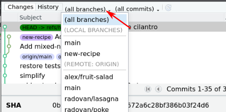
{kind=link}
NOTE: If you don’t see the branch selector when you first open the History window, try to switch from the History view to the Changes view and back.
(6) Compare the branches
Comparing changes is an important thing we need to do. When using the GitHub view only, this may not be so common, but we’ll show it so that it makes sense later on.
A nice way to compare braches is to add /compare to the URL of the repository,
for example (replace USER):
https://github.com/USER/recipe-book/compare
This seems to require an extension. We recommend you use the command line method.
$ git diff main new-recipe
Try also the other way around:
$ git diff new-recipe main
Try also this if you only want to see the file names that are different:
$ git diff --name-only main new-recipe
This doesn’t seem possible in RStudio without an add-in. We recommend that you use the Terminal in RStudio and follow the “Command line” path instructions.
(7) Compare two arbitrary commits
This is similar to above, but not only between branches.
Following the /compare-trick above, one can compare commits on GitHub by
adjusting the following URL:
https://github.com/USER/recipe-book/compare/VERSION1..VERSION2
Replace USER with your username and VERSION1 and VERSION2 with a commit hash or branch name.
Please try it out.
Again, we recommend using the Command Line method.
First try this to get a short overview of the commits:
$ git log --oneline
Then try to compare any two commit identifiers with git diff.
Again, this doesn’t seem possible in RStudio without an add-in. We recommend that you use the Terminal in RStudio and follow the “Command line” path instructions.
(8) Renaming a branch
Branch button → View all branches → three dots at right side → Rename branch.
Version control sidebar → Three dots (same as in step 2) → Branch → Rename branch. Make sure you are on the right branch before you start.
Renaming the current branch:
$ git branch -m better-recipe
Renaming a different branch:
$ git branch -m new-recipe better-recipe
Again, this doesn’t seem possible in RStudio without an add-in. We recommend that you use the Terminal in RStudio and follow the “Command line” path instructions.
(9) Creating a tag
Tags are a way to mark a specific commit as important, for example a release version. They are also like a sticky note, but they don’t move when new commits are added.
Click on the branch switcher, and then on “Tags”, then on “View all tags”, then “Create a new release”:
{kind=link}
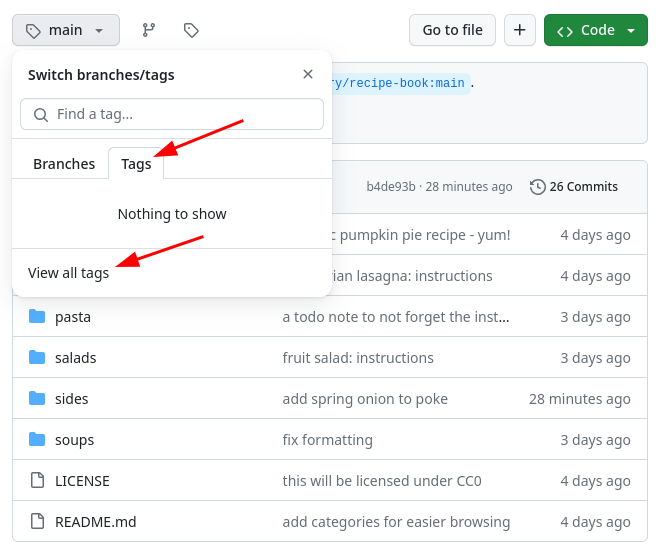
What GitHub calls releases are actually tags in Git with additional metadata. For the purpose of this exercise we can use them interchangeably.
Version control sidebar → Three dots (same as in step 2) → Tags → Create tag. Make sure you are on the expected commit before you do this.
Creating a tag:
$ git tag -a v1.0 -m "New manuscript version of my recipe for the pre-print"
Again, this doesn’t seem possible in RStudio without an add-in. We recommend that you use the Terminal in RStudio and follow the “Command line” path instructions.
Discussion
In this part, we saw how we can make changes to our files. With branches, we can track several lines of work at once, and can compare their differences.
You could commit directly to
mainif there is only one single line of work and it’s only you.You could commit to branches if there are multiple lines of work at once, and you don’t want them to interfere with each other.
Tags are useful to mark a specific commit as important, for example a release version.
In Git, commits form a so-called “graph”. Branches are tags in Git function like sticky notes that stick to specific commits. What this means for us is that it does not cost any significant disk space to create new branches.
Not all files should be added to Git. For example, temporary files or files with sensitive information or files which are generated as part of the build process should not be added to Git. For this we use
.gitignore(more about this later: what-to-avoid).Unsure on which branch you are or what state the repository is in? On the command line, use
git statusfrequently to get a quick overview.
Merging changes and contributing to the project [1]
Git allows us to have different development lines where we can try things out. It also allows different people to work on the same project at the same. This means that we have to somehow combine the changes later. In this part we will practice this: merging.
Objectives
Understand that on GitHub merging is done through a pull request. Think of it as a change proposal.
Create and merge a pull request within your own repository.
Understand (and optionally) do the same across repositories, to contribute to the upstream public repository.
Instructor note
10 min introduction and setup
25 min exercise
15 min discussion
Background
In the last episode, we added a new recipe on a branch. This allows us to test it before it becomes “live”.
Now, we want to bring that change into the “main” branch.
We will find it’s not that hard! But you do have to keep track of the steps and make sure that you are careful about where a change is added.
Merging changes and contributing to the project [2]
Exercise
In this exercise, we will show how we can propose changes and merge changes within our own repository. Optionally, you can propose a recipe to the upstream recipe book - which shows the true purpose of this. But this is only a preview and we will practice collaboration much more in the collaborative Git lesson.
{kind=link}
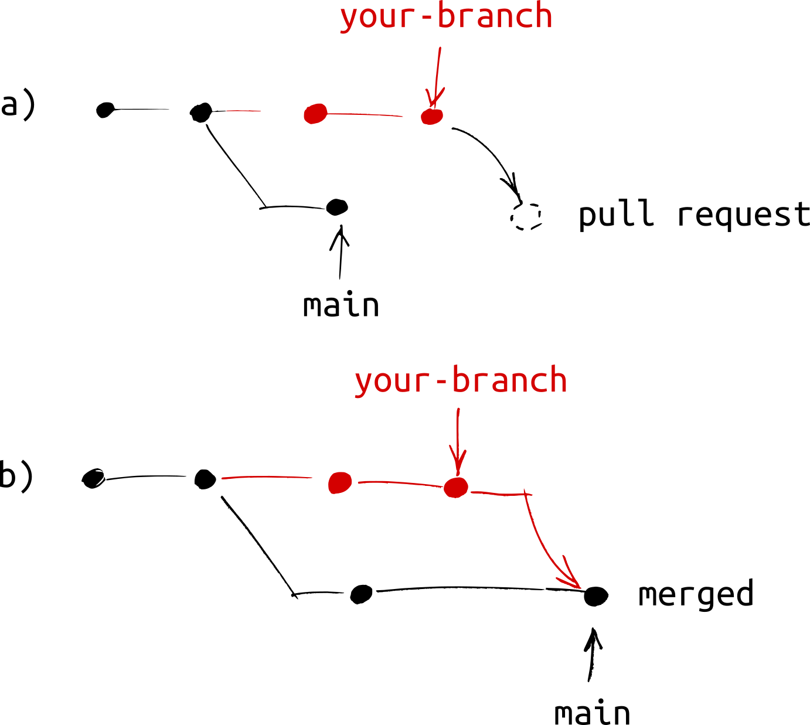
Illustration of what we want to achieve in this exercise.
We offer four different paths of how to do this exercise. For the CodeRefinery workshop day 1, we use and demonstrate the GitHub path only and recommend you do that. The exercise text below has some GitHub-specific notes, but most is possibly with any path.
First, we make something called a pull request, which allows review and commenting before the actual merge.
Exercise: Merging branches with pull requests (20 min)
We assume that in the previous exercise you have created a new branch
with a recipe. In our previous example, it is called new-recipe.
If not, create the branch first and add a recipe to your new branch, see
commits.
We provide basic hints. You should refer to the solution as needed.
Navigate to your branch from the previous episode (hint: the same branch view we used last time).
Begin the pull request process (hint: There is a “Contribute” button in the branch view).
Add or modify the pull request title and description, and verify the other data. In the pull request verify the target repository and the target branch. Make sure that you are merging within your own repository. GitHub: By default, it will offer to make the change to the upstream repository,
cr-workshop-exercises. You should change this, you shouldn’t contribute your test recipe upstream yet. Where it saysbase repository, select your own user’s repository.Create the pull request by clicking “Create pull request”. Browse the network view to see if anything has changed yet.
Merge the pull request, or if you are not on GitHub you can merge the branch locally. Browse the network again. What has changed?
Find out which branches are merged and thus safe to delete. Then remove them and verify that the commits are still there, only the branch labels are gone (hint: you can delete branches that have been merged into
main).Optional: Try to create a new branch with a new change, then open a pull request but towards the central repository. We will later merge few of those. (Hint: this is mostly the same as above, for the GitHub path. But, you set the base repository as CodeRefinery. You might need to compare across forks.)
When working locally, it’s easier to merge branches: we can just do the merge, without making a pull request. But we don’t have that step of review and commenting and possibly adjusting.
Exercise
Switch to the
mainbranch that you want to merge the other branch into. (Note that this is the other way around from the GitHub path).
Then:
Merge the other branch into
main(which is then your current branch).Find out which branches are merged and thus safe to delete. Then remove them and verify that the commits are still there, only the branch labels are gone. (Hint: you can delete branches that have been merged into
main).(optional, advanced) Try to create a new branch, and make a GitHub pull request with your recipe, and contribute it to our upstream repository. This is very complex right now since your change has to get to GitHub, and we haven’t shown that yet. We don’t give a solution for this.
The solution below goes over most of the answers, and you are encouraged to use it when the hints aren’t enough - this is by design.
Solution and walk-through
{kind=link}
(2) Begin the pull request process
In GitHub, the pull request is the way we propose to merge two branches together. We start the process of making one.

It is possible to open pull requests from the editor, but we don’t cover that here.
If you are working locally, continue to step 5.
It is possible to open pull requests from the command line, but we don’t cover that here.
If you are working locally, continue to step 5.
It is possible to open pull requests from the terminal, but we don’t cover that here.
If you are working locally, continue to step 5.
(3) Fill out and verify the pull request
Check that the pull request is directed to the right repository and branch and that it contains the changes that you meant to merge.
Things to check:
Base repository: this should be your own
Title: make it descriptive
Description: make it informative
Scroll down to see commits: are these the ones you want to merge?
Scroll down to see the changes: are these the ones you want to merge?

This screenshot only shows the top part. If you scroll down, you can see the commits and the changes. We recommend to do this before clicking on “Create pull request”.
If you are working locally, continue to step 5.
If you are working locally, continue to step 5.
If you are working locally, continue to step 5.
(4) Create the pull request
We actually create the pull request. Don’t forget to navigate to the Network view after opening the pull request. Note that the changes proposed in the pull request are not yet merged.
Click on the green button “Create pull request”.
If you click on the little arrow next to “Create pull request”, you can also see the option to “Create draft pull request”. This will be interesting later when collaborating with others. It allows you to open a pull request that is not ready to be merged yet, but you want to show it to others and get feedback.
It is possible to create pull requests from the editor, but we don’t cover that here.
If you are working locally, continue to step 5.
It is possible to create pull requests from the command line, but we don’t cover that here.
If you are working locally, continue to step 5.
It is possible to create pull requests from the terminal, but we don’t cover that here.
If you are working locally, continue to step 5.
(5) Merge the pull request
Now, we do the actual merging. We see some effects now.
Review it again (commits and changes), and then click “Merge pull request”.
After merging, verify the network view. Also navigate then to your “main” branch and check that your new recipe is there.
Just like with the command line, when we merge we modify our current branch. Verify you are on the main branch.
Verify current branch at the bottom.
From the version control sidebar → Three dots → Branch → Merge
In the selector that comes up, choose the branch you want to merge from. The commits on that branch will be added to the current branch.
{kind=link}
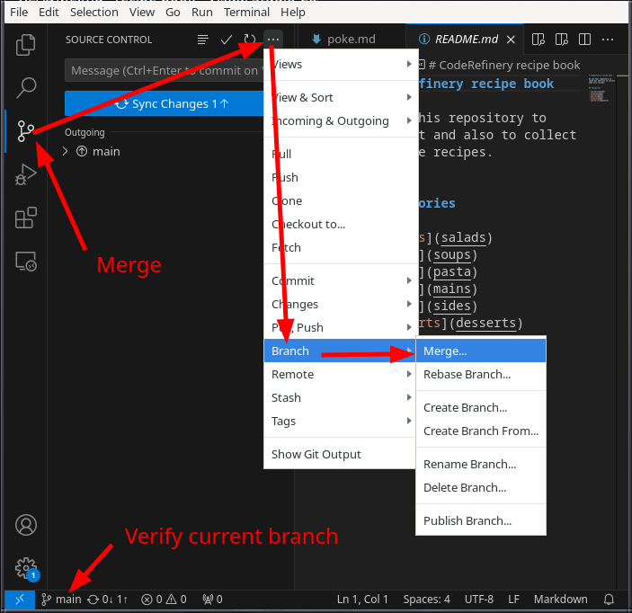
On the command line, when we merge, we always modify our current branch.
If you are not sure anymore what your current branch is, type:
$ git branch
… or equally useful to see where we are right now:
$ git status
In this case we merge the new-recipe branch into our current branch:
$ git merge new-recipe
This doesn’t seem possible in RStudio without an add-in. We recommend that you use the Terminal in RStudio and follow the “Command line” path instructions.
(6) Delete merged branches
Before deleting branches, first check whether they are merged.
If you delete an un-merged branch, it will be difficult to find the commits that were on that branch. If you delete a merged branch, the commits are now also part of the branch where we have merged to.
One way to delete the branch is to click on the “Delete branch” button after the pull request is merged:
{kind=link}
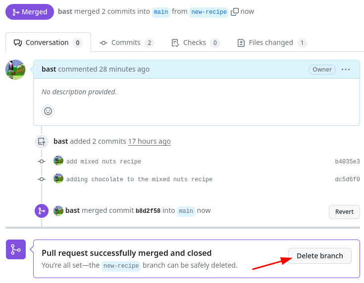
But what if we forgot? Then navigate to the branch view:
{kind=link}
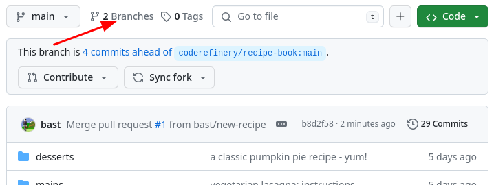
In the overview we can see that it has been merged and we can delete it:
{kind=link}
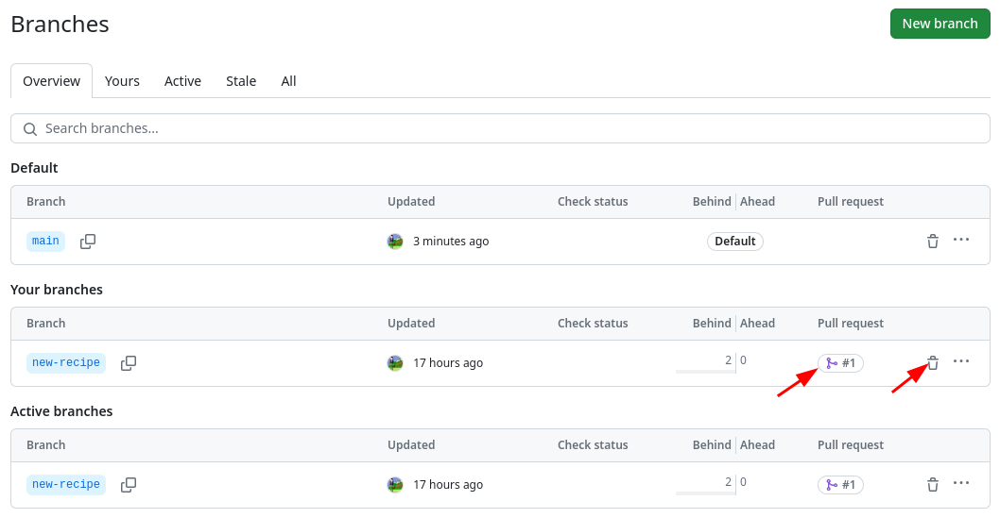
From the Source Control sidebar → the three dots (as before) → Branch → Delete Branch. Select the branch name to delete.
Verify which branches are merged to the current branch:
$ git branch --merged
* main
new-recipe
This means that it is safe to delete the new-recipe branch:
$ git branch -d new-recipe
Verify then that the branch is gone but that the commits are still there:
$ git branch
$ git log --oneline
This doesn’t seem possible in RStudio without an add-in. We recommend that you use the Terminal in RStudio and follow the “Command line” path instructions.
(7) Contribute to the original repository with a pull request
Remember, this is an advanced step. If you do this, you are donating a recipe to everyone.
Now that you know how to create branches and opening a pull request, try to open a new pull request with a new change but this time the base repository should be the upstream one.
In other words, you now send a pull request across repositories: from your fork to the original repository.
Another thing that is different now is that you might not have permissions to merge the pull request. We can then together review and browse the pull request.
Not described. We will return to this in the collaborative Git lesson.
You would create a new branch locally like above, push it to GitHub to your own user’s repository USER/recipe-book, then go to GitHub and open a pull request to cr-workshop-exercises/recipe-book. Or you do it all through VS Code.
Not described. We will return to this in the collaborative Git lesson.
You would create a new branch locally like above, push it to GitHub to your own user’s repository USER/recipe-book, then go to GitHub and open a pull request to cr-workshop-exercises/recipe-book.
Not described. We will return to this in the collaborative Git lesson.
You would create a new branch locally like above, push it to GitHub to your own user’s repository USER/recipe-book, then go to GitHub and open a pull request to cr-workshop-exercises/recipe-book.
Resolving a conflict (demonstration)
A conflict is when Git asks humans to decide during a merge which of two changes to keep if the same portion of a file has been changed in two different ways on two different branches.
We will practice conflict resolution in the collaborative Git lesson.
Here we will only demonstrate how to create a conflict and how to resolve it, all on GitHub. Once we understand how this works, we will be more confident to resolve conflicts also in the command line.
How to create a conflict (please try this in your own time and just watch now):
Create a new branch from
mainand on it make a change to a file.On
main, make a different change to the same part of the same file.Now try to merge the new branch to
main. You will get a conflict.
How to resolve conflicts:
On GitHub, you can resolve conflicts by clicking on the “Resolve conflicts” button. This will open a text editor where you can choose which changes to keep. Make sure to remove the conflict markers. After resolving the conflict, you can commit the changes and merge the pull request.
Sometimes a conflict is between your change and somebody else’s change. In that case, you might have to discuss with the other person which changes to keep.
How to avoid conflicts:
We will talk about it in the collaborative Git lesson.
Summary
We learned how to merge two branches together.
When is this useful? This is not only useful to combine development lines in your own work. Being able to merge branches also forms a basis for collaboration.
Branches which are merged to other branches are safe to delete, since we only delete the “sticky note” next to a commit, not the commits themselves.
Cloning a Git repository and working locally [1]
If you’ve been following the main path, you have just had interacted with repositories on GitHub. This might not be what you usually do, so now we move to working on your own computer.
Objectives
We are able to clone a repository from the web and modify it locally.
We can do the same things we did before (commit, branch, merge), but locally.
We get a feeling for remote repositories (more later).
Instructor note
10 min introduction and setup
25 min exercise
15 min discussion
What is in a Git repository and what are we cloning?
{kind=link}
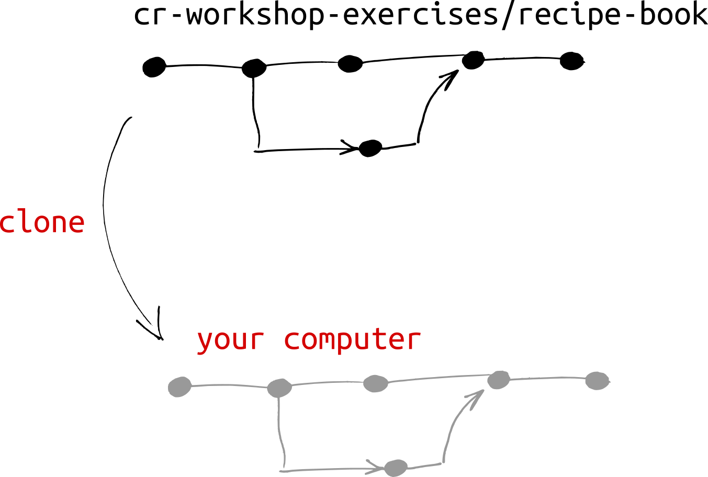
Illustration of cloning a repository to a local computer.
Git repository:
Contains all the files and directories of a project.
Contains the complete history of all changes (commits) to these files and directories.
Each commit is a snapshot of the entire project at a certain point in time and has a unique identifier (“hash”).
Sometimes it contains multiple branches and tags.
All the commits and history of a local repository are stored in a directory called
.gitwhich is located at the root of the repository.
Cloning:
Copying (downloading) the entire repository with all commits, branches, and tags to your computer.
It is a full backup of the repository, including all history.
You can then work on your local clone of the repository.
Changes on local clone will not automatically appear in the repository where we cloned from. We have to actively “push” them there (we will practice this in a later episode: sharing-repositories).
Cloning a Git repository and working locally [2]
Exercise
Work on this by yourself or in your teams. Conceptually this episode should seem familiar, from the browser-based exercises we did yesterday.
We offer the Command Line, VS Code and RStudio paths for this exercise. GitHub isn’t an option in this episode, since that is what we already demonstrated in commits and merging and since the point of this episode is to work locally.
It is also possible to use the command line (terminal) from inside VS Code or RStudio.
Exercise: Cloning a Git repository and working locally (25 min)
Configure Git command line and editor if you haven’t done that already.
Decide which repository you want to clone: your fork or the original repository? Both will work for this exercise. Then, clone the recipe book.
Create a new branch.
Make a commit on your new branch.
Switch back to the
mainbranch and create one or two commits there.Merge the new branch into
main.Compare the graph locally and on GitHub and observe that the changes only exist locally on your computer.
Where are the remote branches? Practice how you can see all remote branches also locally and how you can fetch them and make local changes to them.
The solution below goes over most of the answer and should be used as your guide (you can’t figure it out just from the exercise instructions).
Solution and walk-through
(1) Configure Git command line and editor
We have an own section for this: Configuring Git command line and editor.
(2) Cloning a repository
Now you need to decide which repository you want to clone. All of these options will work for this exercise since we don’t plan to push changes back (for step 8 it might be easier to use the original repository):
Clone the recipe book from your fork.
Or clone the recipe book from the original repository: https://github.com/cr-workshop-exercises/recipe-book
Or first fork the original repository and then clone your fork.
The examples below assume you are cloning the original repository. If you are cloning your fork, you should
replace cr-workshop-exercises with your GitHub username.
If you are unsure whether you are using SSH or HTTPS, please read Authenticating to GitHub: SSH or HTTPS or VS Code or RStudio?.
$ git clone git@github.com:cr-workshop-exercises/recipe-book.git
$ git clone https://github.com/cr-workshop-exercises/recipe-book.git
This creates a directory called “recipe-book” unless it already exists. You can also specify the target directory on your computer (in this case “my-recipe-book”):
$ git clone git@github.com:cr-workshop-exercises/recipe-book.git my-recipe-book
$ git clone https://github.com/cr-workshop-exercises/recipe-book.git my-recipe-book
Start a new window.
If you have the “Welcome” tab when you start a new window: Under “Start” on the screen, select “Clone Git Repository…”.
Alternatively navigate to the “Source Control” tab on the left sidebar and click on the “Clone Repository” button. You need to have started a brand new window that’s not part of a project.
Paste in this URL: https://github.com/USER/recipe-book (replace USER)
If you are asked whether you want to open the cloned repository or to add it to the current workspace, select “Open”.
The easiest way to clone the repository via RStudio is to create a new project.
Start RStudio if not already open.
Go to “File” → “New Project…”
Choose “Version Control”, and then “Git”
In the “Repository URL” field, paste in this URL:
https://github.com/USER/recipe-book, replaceUSERas needed. You can also get the URL from your browser.You can change the “Project directory name” if you want but that is not mandatory. By default, it will use the repository name from the URL.
Click “Create Project”
(3) Creating branches locally
Create a new branch called another-recipe from main and switch to it:
$ git switch --create another-recipe main
If you leave out the last argument, it will create a branch from the current branch:
$ git switch --create another-recipe
Make sure that you are on the main branch.
Source Control button on left sidebar → Three dots in upper right of source control → Branch → Create Branch.
VS Code automatically switches to the new branch.
Creating a new branch in VS Code.
In the Git tab of the Environment panel (upper right), click New Branch.
In the pop-up fill in the branch name, e.g. “new-recipe”, untick the box in front of Sync branch with remote to avoid the branch to be pushed to GitHub right away.
Click Create and RStudio will automatically switch to the new branch.
Creating a branch in RStudio
(4) Creating commits locally
Create a new file. After we have created it, we can stage and commit the change:
$ git add new-file.md
$ git commit -m "Short summary of the change"
Make sure to replace “new-file.md” with the actual name of the file you created and to replace “Short summary of the change” with a meaningful commit message.
Create a new file.
In the version control sidebar, click the
+sign to add the file for the next commit.Enter a brief message and click “Commit”.
Committing a new file in VS Code.
Create a new file the usual way. Remember to save any changes to your file before committing.
In the Git tab in the Environment panel (upper right) check the box in front of the file you just created, then click Commit in the tab menu-bar to open the Git Changes window.
In the Changes window, check that your new file is selected (ticked), write a short commit message, and finally click “Commit”
(5) Switching branches and creating commits
First switch to the main branch:
$ git switch main
Then modify a file. Finally git add and then commit the change:
$ git commit -m "Short summary of the change"
Use the branch selector at the bottom to switch back to the main branch. Repeat the same steps as above.
Switching branch via selector at bottom.
In the Git tab of the Environment panel (upper right), click your current branch name, here “new-recipe” and then choose the “main” branch.
Modify another recipe and commit your changes.
(6) Merging branches locally
On the command line, when we merge, we always modify our current branch.
If you are not sure anymore what your current branch is, type:
$ git branch
Another way to find out where we are in Git:
$ git status
In this case we merge the another-recipe branch into our current branch:
$ git merge another-recipe
Just like with the command line, when we merge we modify our current branch. Verify you are on the main branch.
Verify current branch at the bottom.
From the version control sidebar → Three dots → Branch → Merge
In the selector that comes up, choose the branch you want to merge from. The commits on that branch will be added to the current branch.
This doesn’t seem possible in RStudio without an add-in. Luckily, like previously, via the Terminal tab you can use the “Command line” method.
(7) How to compare the graph locally and on GitHub
$ git log --graph --oneline --decorate --all
We recommend to define an alias in Git, to be able to nicely visualize branch structure in the terminal without having to remember a long Git command:
$ git config --global alias.graph "log --all --graph --decorate --oneline"
Then you can just type git graph from there on. We have an own section about
aliases: aliases.
Compare this with the graph on GitHub: Insights tab → Network view (just like we have done before). The result is that we should not be able to see the new branch and the new commits on GitHub (since we haven’t pushed it to GitHub yet - it is only local work so far).
This requires an extension. Opening the VS Code terminal lets you use the command line method.
View → Terminal will open a terminal at bottom. This is a normal command line interface and very useful for work. (Note the git-aware prompt that shows the current branch. This requires other setup.)
You can find a graph view in RStudio, but it doesn’t seem you can compare arbitrary commits without an extension. Luckily, the command line method works, as usual.
Open the history window like you did during the previous lesson.
Select “(All branches)” in the branch selector drop-down menu to see all the commits on all branches.
NOTE: If you don’t see the branch selector when you first open the History window, try to switch from the History view to the Changes view and back.
Compare this with the graph on GitHub: Insights tab → Network view (just like we have done before). The result is that we should not be able to see the new branch and the new commits on GitHub (since we haven’t pushed it to GitHub yet - it is only local work so far).
(8) Browsing remote branches and creating local branches from them
With git branch you can list all local branches:
$ git branch
another-recipe
* main
But where are the remote branches? We expect to see a couple of them.
We can see them by asking for all branches (your output might vary depending on where you cloned from):
$ git branch --all
another-recipe
* main
remotes/origin/HEAD -> origin/main
remotes/origin/alex/fruit-salad
remotes/origin/main
remotes/origin/radovan/lasagna
remotes/origin/radovan/poke
You can create a local branch from a remote branch which will “track” the remote branch.
For instance, to create a local branch alex/fruit-salad from the remote branch origin/alex/fruit-salad
and switch to it, you can do:
$ git switch --create alex/fruit-salad origin/alex/fruit-salad
This shortcut will do the same thing:
$ git switch --track origin/alex/fruit-salad
Or even shorter:
$ git switch alex/fruit-salad
If you want to create a branch and not switch to it, you can use git branch.
$ git branch alex/fruit-salad
To create a local branch from a remote branch:
Source Control button on left sidebar → Three dots in upper right of source control → Branch → “Create Branch From …”.
Then select the remote branch you want to create a local branch from.
The branch picker also lists branches on remotes. If you click on one of them, it will create a local branch and track it.
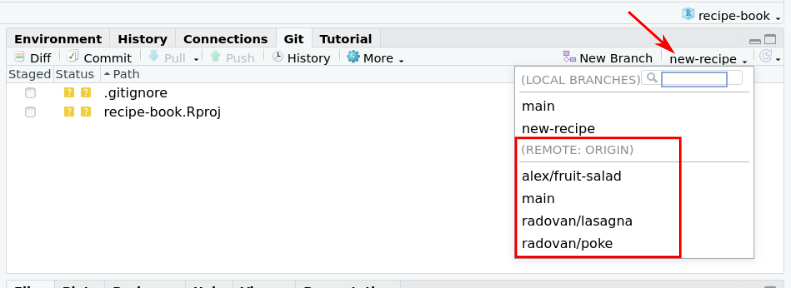
Summary
When we clone a repository, we get a full backup of the repository, including all history: all commits, branches, and tags.
Yesterday we learned about branches and commits, and now we created and used them locally.
Creating local branches and commits does not automatically modify the remote repository. To “push” our local changes to the remote repository, we have to actively “push” them there. We will practice this in a later episode: sharing-repositories
Remote branches and local branches are not the same thing. If we want to create local commits, we always need to create a local branch first. But the local branch can “track” the remote branch and we can push and pull changes to and from the remote branch.